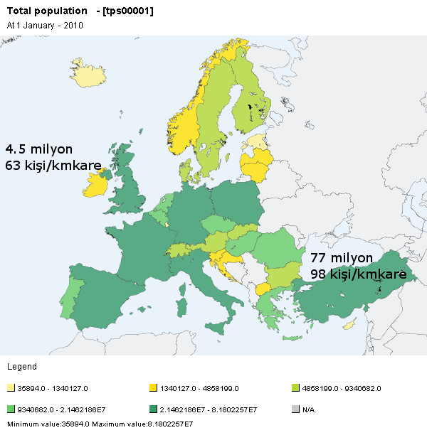
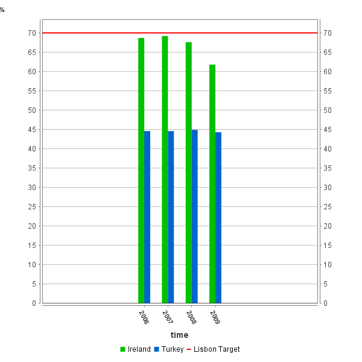
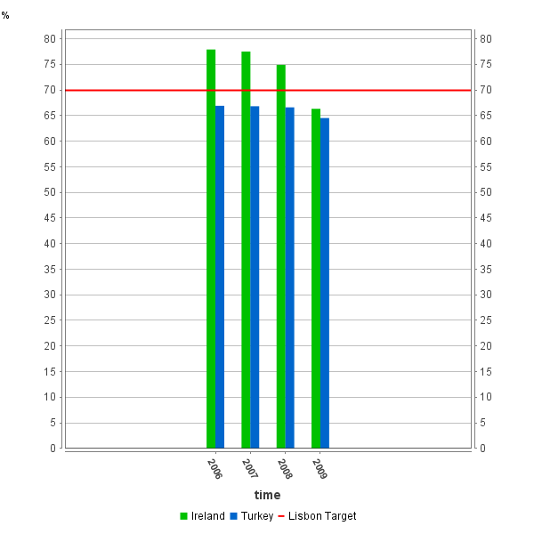
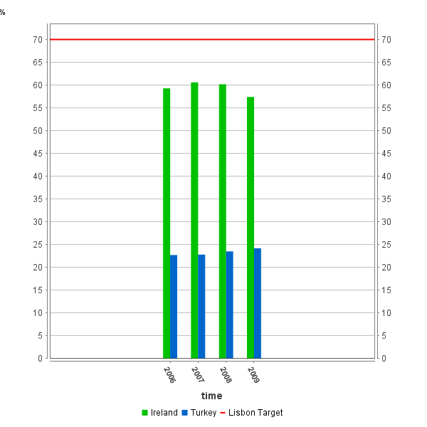

İrlanda'da Yaşam
Oldukça pahalı, ama oldukça kolay. Çok düzenli ve her yönüyle insana değer verilen bir ülke.
Demografik Özellikler
- AB üyeliği: 1 Ocak 1973
- Başkent: Dublin
- Nüfus: 4 467 854 kişi (2010-İrlanda Cumhuriyeti) ve kilometre kareye (70273) 63 kişi düşüyor.
- Türkiye nüfusu 77 milyon civarında ve kilometre kareye (783562) 98 kişi düşüyor.
- İstanbul nüfusu 14 milyon (!!!?) civarında ve kilometre kareye (5343) 2600 kişi düşüyor!!!

Kaynak:Eurostat
- Doğumda yaşam beklentisi (~77yaş (E) – 82 (K))
- Doğurganlık oranı (2 çocuk/kadın)
- Araştırma Geliştirme’ye ayrılan harcama payı Türkiye’nin 2 katı (GDP’ye oranı %1.45)
Teknolojik Özellikler
- Evde internet erişimi olan hanehalklarının yüzdesi
- İrlanda (%63-67-72 (2008-2009-2010))
- Türkiye (%25-30-42 (2008-2009-2010))
İstihdam Genel

Kaynak:Eurostat
İstihdam Erkek

Kaynak:Eurostat
İstihdam Kadın

Kaynak:Eurostat
Yaşamda zorlukları olanlar da unutulmamış
Kaldırımların hepsinde bebek arabası, tekerlekli sandalye yürütmek için meyil var.